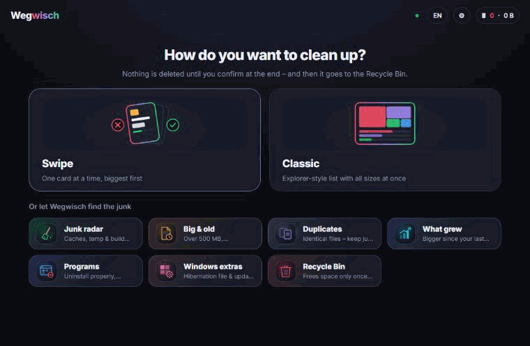
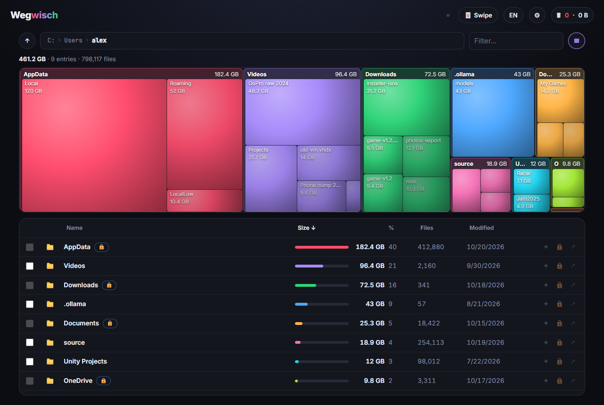
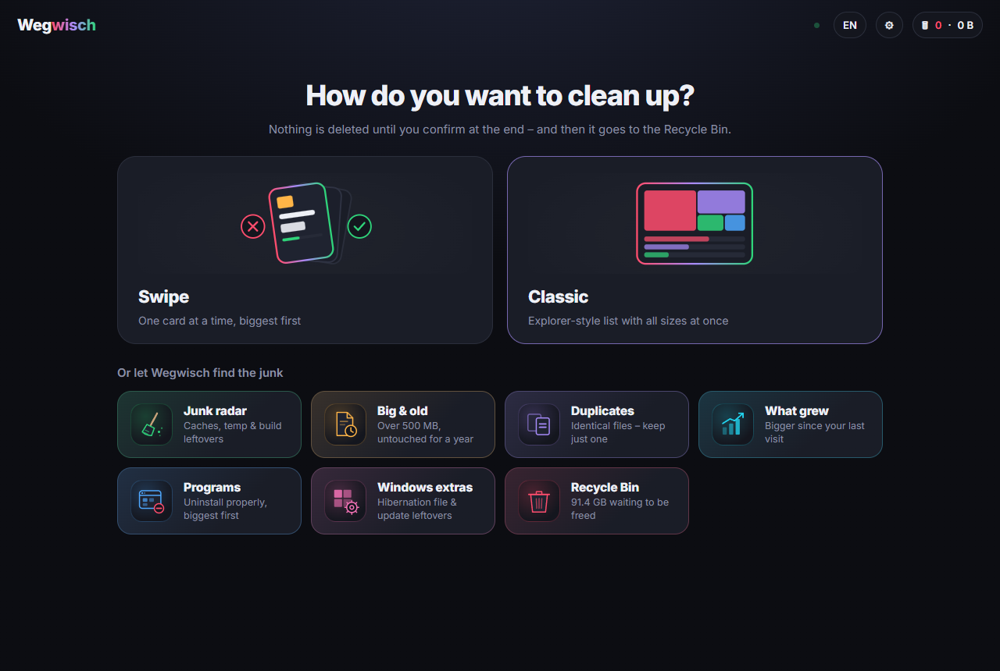
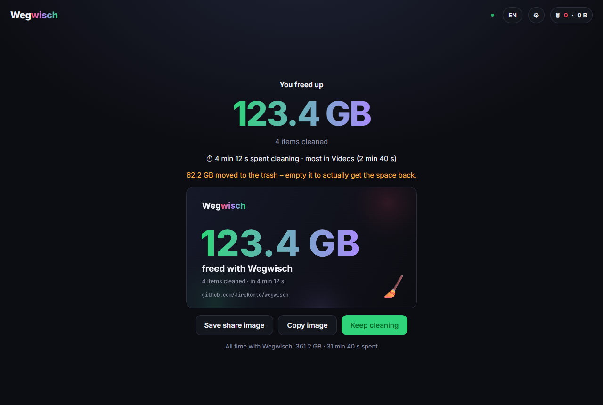

Your disk is full and you don't know why. Wegwisch shows you the biggest things first, one card at a time. Swipe left to delete, right to keep or look inside, up to ask an AI what it even is.

Nothing is deleted while you swipe – everything lands on a delete pile you review at the end, and goes to the Recycle Bin by default.
Onto the delete pile. You confirm everything at the end.
Files stay. Folders get queued – their contents come up next.
"What is this and can it go?" – a verdict in two sentences.
Remembered forever, never suggested again.
Shader caches, temp files, browser & dev caches, crash dumps – plus node_modules, Unity Library and Unreal caches it finds while scanning.
Prefer an overview? A WinDirStat-style block map above an Explorer-style list with every size at once. Switch any time.
A pool of worker threads you can tune. Folders you're looking at jump the queue. Counts real disk usage – no phantom gigabytes from VM images.
Claude Code, an Anthropic API key or a local model via Ollama. No AI? The up-swipe just disappears.
Old Windows installs on second drives, zips next to their unpacked folder, installers rotting in Downloads.
"You freed up 83 GB" – as a share image, plus how long it took and all-time stats.
Identical files (verified by hash), files nobody touched in a year, and folders that grew since your last visit.
Installed programs by size – swiping left runs the program's own uninstaller instead of ripping out folders.
See what's sitting in the Recycle Bin, empty it, and turn off the hibernation file or clean the update store – each explained.



Every path gets classified before you even see the card. The rules are tested on Windows, macOS and Linux.
Your OS, drive roots, profile folders, cloud-synced folders (OneDrive, Dropbox, iCloud…), SSH keys, and folders of programs that are running right now.
Program folders, app data, Steam games, old Windows installs on other drives. Deletable – with a clear warning on the card.
Caches and temp folders are emptied, never removed – apps expect them to exist.